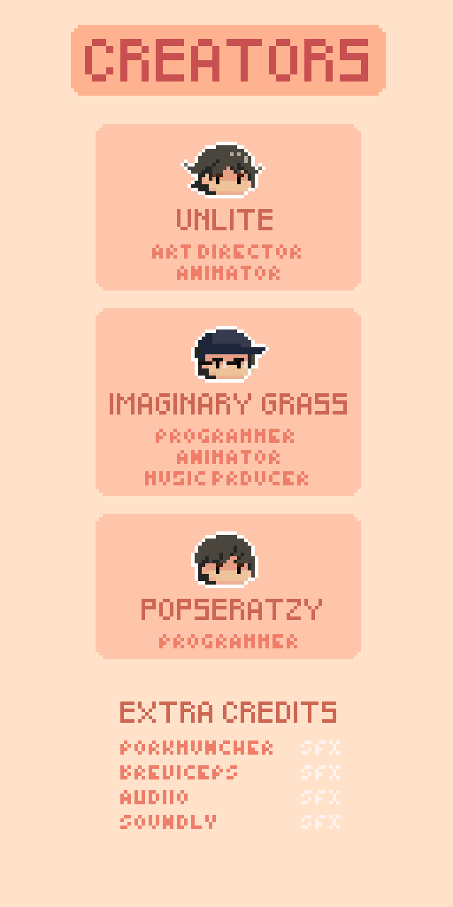

Tilting Islands: GMTK Gamejam 2024
Overview
Tilting Islands is a game where you, as the hero, must bring the islands back into equilibrium by activating all 10 altars. However, alien monsters seek to destroy the world and will try to stop you.
The game balances strategic challenges with intense action as you navigate the tilted world, battling enemies to restore balance and save the islands.
My Role
- Directed the overall game design, shaping core mechanics and player experience to complement the art style and narrative.
- Led the visual direction as Art Director, ensuring a cohesive and engaging aesthetic throughout the project.
- Created all art assets, including character designs, environments, and UI elements.
- Collaborated closely with the team to align art, design, and gameplay goals within the game jam timeframe.
Aseprite
Procreate
Clip Studio Paint
Unity
C#

Play the Game
